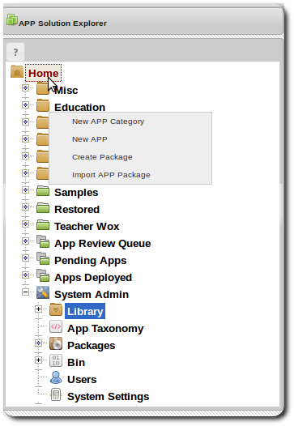
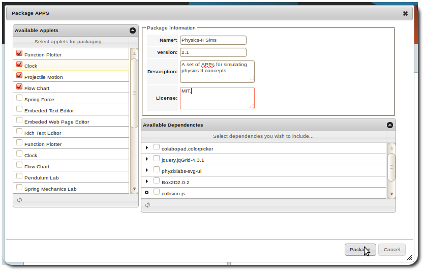
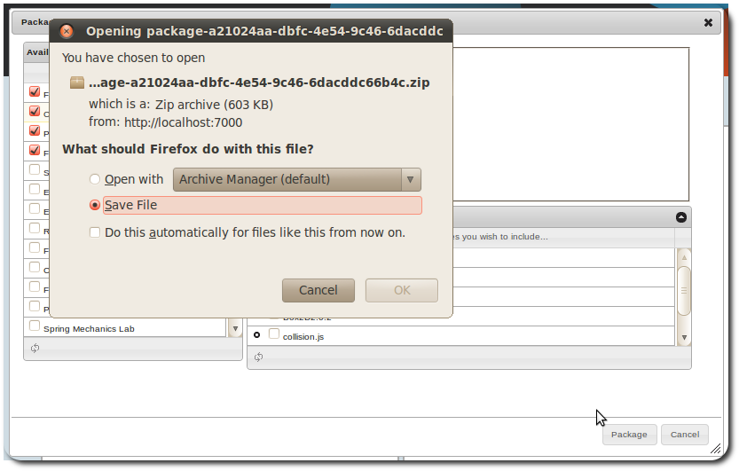
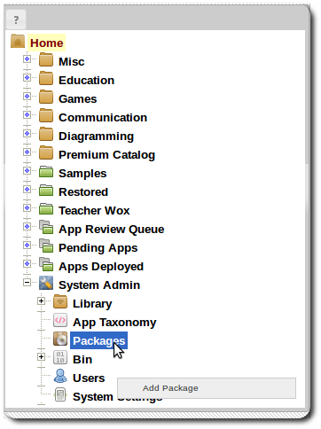
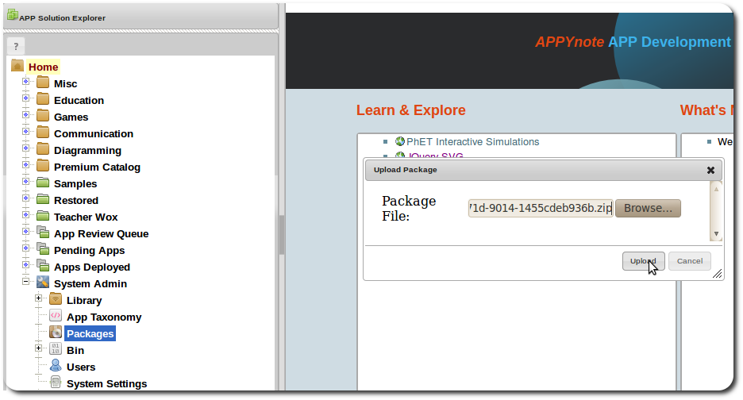
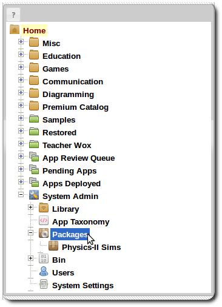
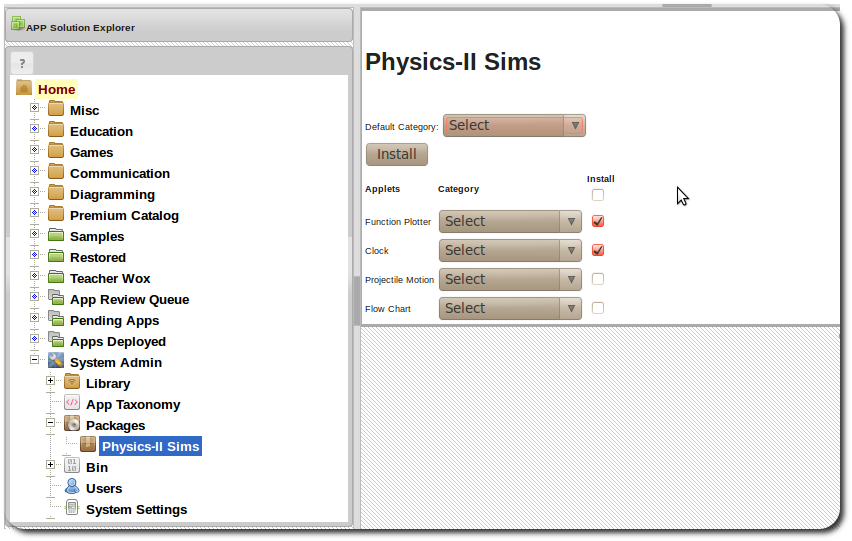
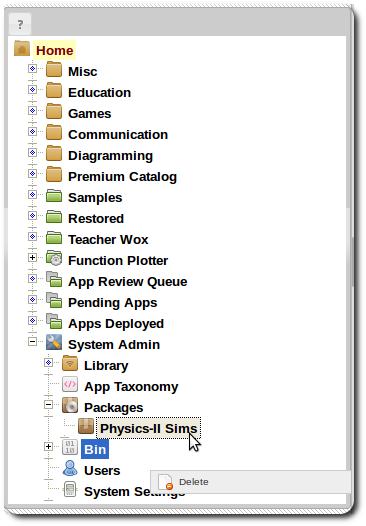

APP Packages
Managing APP Packages
APPs can be distributed as packages. The package management interface allows for the packaging of APPs that
a developer has access to.
Creating APP Package
-
Right click on the Home item in the navigation panel.
 -
Select "Create Package" from the menu to display package export dialog.
 - Select the APPs you wish to export, you also select the dependencies from the Library that the APPs may need.
-
Once Exported, you'll be prompted to download the zip file that represents the package.
 - This package may now be distributed to other APPYnotebook installations whether as free downloads or sold.
Adding an APP Package
-
Right click the Packages item and select Add package.
 -
Select the package you wish to add to the system.
 - Once added to the system the package would be listed under
- Packages
. 
Installing an APP Package
-
Click on the package under Packages to open package view.
 - Select the APPs you wish to install and these will be installed into the dev environment under the select taxonomy category and also deployed to production.
Removing an APP Package
-
Right Click on the package under Packages and select delete.
